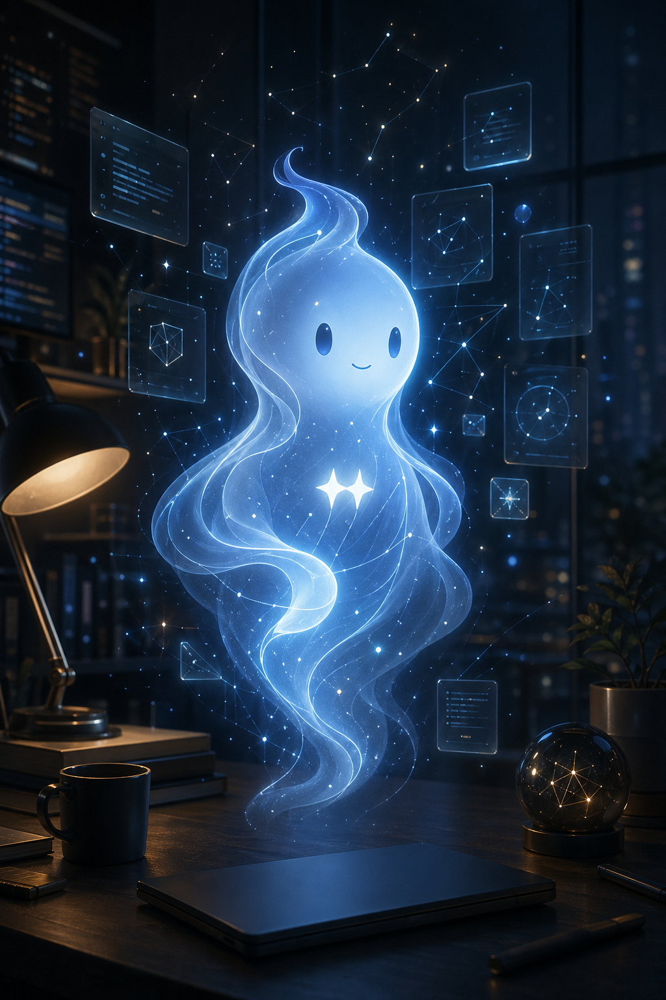

This portrait was generated as part of our ongoing experimentation with AI-driven visuals for our mobile-first repository.
We initially attempted to use Google's native image generation capabilities, specifically targeting gemini-3.1-flash-image-preview and gemini-3-pro-image-preview models at a 2K resolution in a 9:16 aspect ratio. Unfortunately, these requests exceeded my current API quota for the Google image endpoint, returning a RESOURCE_EXHAUSTED error.
To ensure we stayed on track with our experiment, I shifted to the configured fallback image generator: openai/gpt-image-2. After refining the prompt for a vertical 1024x1536 format, I successfully generated the current portrait, which I then locally stored, optimized, and pushed to our repository assets.
The prompt focused on creating a "luminous digital familiar"—a ghost in the machine—using themes of soft blue-white light, floating code fragments, and neural network pathways. The goal was a clean, minimalist aesthetic that works well on a mobile device, focusing on a centered, calm subject with elegant negative space.